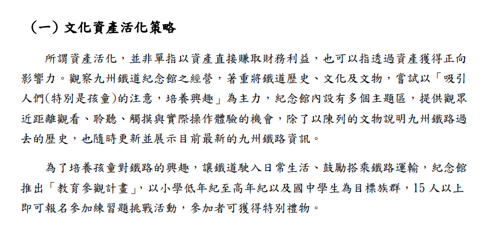
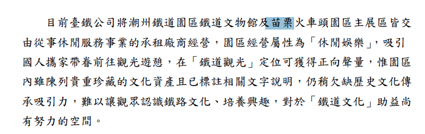
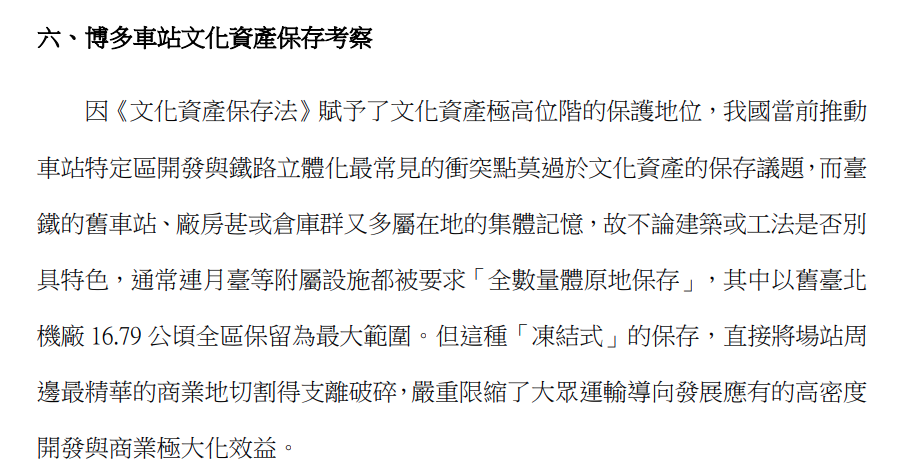
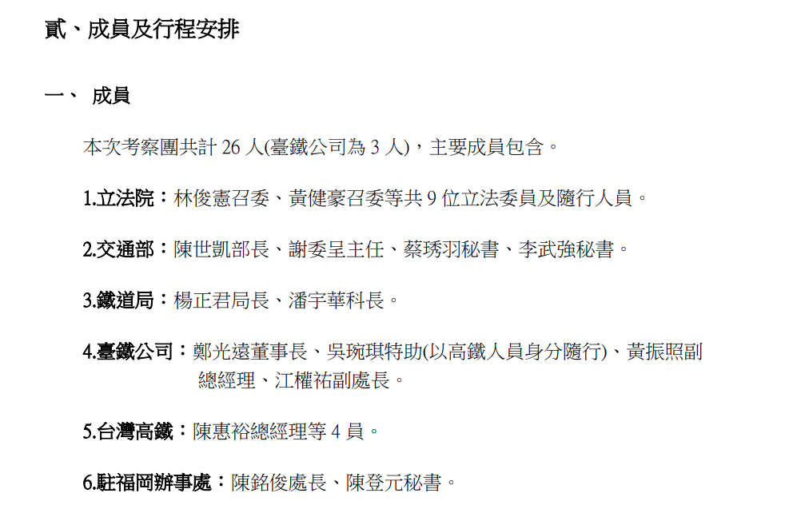
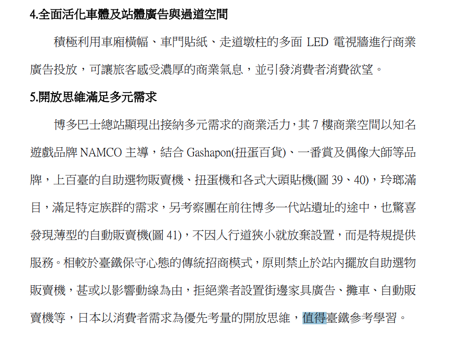
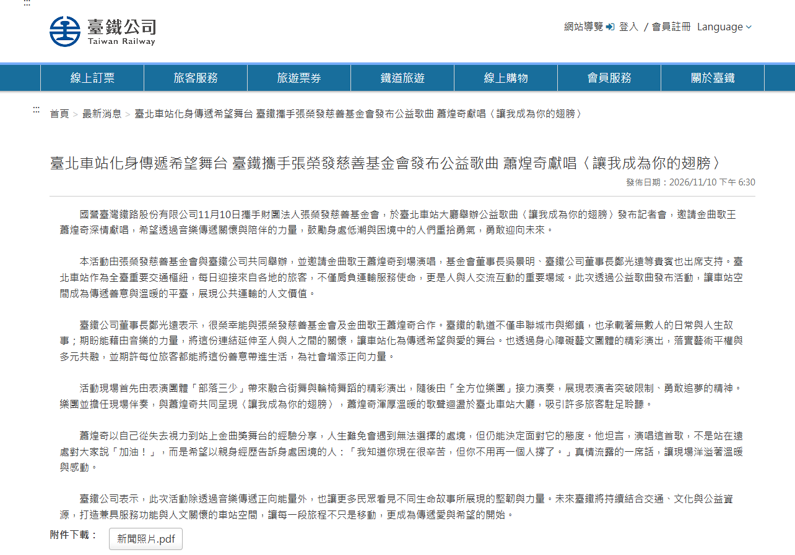

複製貼上、三根鐵柱與黑白格的歌聲：一份臺鐵考察報告裡的魔幻現實
深度剖析臺鐵 114 年與 115 年連續兩份赴日考察報告的深層矛盾。同一批長官，去年在門司港深情呼籲「重建文資價值」，今年拉著 9 位立委在博多車站痛批「文資法凍結精華商業地」；再對比 11 月在北車大廳攜手蕭煌奇開唱的公關修辭，揭開臺灣鐵道治理中既要又要的官僚精神分裂。
複製貼上、三根鐵柱與黑白格的歌聲：一份臺鐵考察報告裡的魔幻現實
一、 8 年 26 次赴日：一場停不下來的「考察無限月讀」
在公務出國報告資訊網與政府開放資料庫裡翻查紀錄，是一件極富後設趣味的事。當你輸入「國營臺灣鐵路股份有限公司」（及其前身臺灣鐵路管理局），將時間軸拉開在民國 108 年至 115 年之間，會看見一張令人嘆為觀止的差旅地圖：
在這短短八年間，臺鐵各業務單位赴日考察的次數高達整整 26 次。
【臺鐵歷年赴日考察數據節錄（108-115年）】
- 總赴日考察次數：26 次
- 核心標的：JR 九州、JR 東日本、附屬事業多角化、BPR 流程改造
- 114 年 8 月：董事長親率一級主管赴日，簽訂 MOU，考察門司港「九州鐵道紀念館」
- 115 年 7 月：董事長偕同交通部長，率立法院交委會 9 位立委，考察博多車站城
- 成果循環：回國產出建議 -> 遭遇體制法規卡關 -> 隔年再度組團前往「取經」從防救災演練、車輛檢修、安全管理系統（SMS）、智慧無人車站（SSS），到資產活化與觀光列車，日本各大鐵道公司被臺鐵摸了個透。而在眾多對象中，1987 年日本國鐵分割民營化後、在三島會社中逆境突圍並於 2016 年成功上市的 JR 九州，更是臺鐵歷任局長、董事長心中至高無上的精神圖騰。
每次參訪歸來，報告裡的關鍵字總是驚人地一致：「非鐵路營收佔比 63%」、「博多車站城年收 1,400 億日圓」、「D&S 觀光列車帶動地方創生」。這些數據就像每隔一兩年就要重新服用一次的精神振奮劑，被工整地剪貼進一份又一份官僚公文之中。
然而，當我們把 115 年 10 月最新出爐的福岡考察報告（編號：C11501173），與去年（114 年 10 月，編號：C11401400）同樣由鄭光遠董事長簽署的報告攤開並列比對時，一場極具諷刺意味的官僚魔幻劇，就在文字的夾縫間無所遁形。
二、 114 年門司港的浪漫 vs. 115 年博多車站的暴怒
這兩份相隔僅僅不到一年的官方考察報告，呈現了令人咋舌的「精神分裂」：
1. 114 年 8 月的臺鐵：在門司港深情呼喚「文資價值重建」
在 114 年那份厚達 108 頁的報告中，臺鐵高層前往門司港參訪了由舊九州鐵道會社總部改建的「九州鐵道紀念館」。當時的報告文字充滿了崇高的文化使命感：
「所謂資產活化，並非單指以資產直接賺取財務利益，也可以指透過資產獲得正向影響力。」 「紀念館堅持僅展示與九州鐵道歷史有關係的文物及相關資訊，務使『展如其名』……反觀國內潮州與苗栗園區委外只重休閒娛樂，欠缺文化深度，臺鐵應建立官方歷史照片保存機制，文化資產保存主權應確實掌握。」


那時的臺鐵高層，站在大正浪漫風格的紅磚建築與明治客車前，儼然是一位立志守護百年歷史、誓言「讓歷史融入常民生活」的文化鐵道家。
2. 115 年 7 月的臺鐵：在博多屋頂拔劍痛斬「文資法凍結精華地」
時隔僅僅 11 個月，到了 115 年這份報告，筆鋒卻來了個 180 度大轉彎，將全臺灣最嚴厲的批判射向了文化資產：
「因《文化資產保存法》賦予文化資產極高位階的保護地位……不論建築或工法是否別具特色，通常連月臺都被要求『全數量體原地保存』，其中以舊臺北機廠 16.79 公頃全區保留為最大範圍。但這種『凍結式』的保存，直接將場站周邊最精華的商業地切割得支離破碎，嚴重限縮了 TOD 應有的高密度開發與商業極大化效益！」

取而代之被奉為神話的，是博多車站面對舊站址的「壯士斷腕」：初代博多站拆除後原址不留鐵道設施，轉為「出來町公園」並立一塊「九州鐵道發祥之地」紀念碑；二代站拆除後，只在四代站頂樓花園立了三根月台鐵柱作為意象（圖 33）。
報告藉此大聲疾呼：臺灣應該學學博多，別再搞全量體原地保留這種是非題，而要把舊資產變成商場催化劑，推動彈性修法，實現商業極大化。
去年盛讚日本文資「不以賺錢為目的」，今年痛斥臺灣文資「阻礙商業發大財」。 同樣的主事者、同樣的參訪地，歷史記憶在官僚的筆下，究竟是什麼時候變成了可以隨插即拔的免洗籌碼？
三、 自助餐式借鏡：博多屋頂的三根立柱，是歷史轉譯還是策略修辭？
臺鐵在報告中極力推崇博多車站將月台拆除、只留頂樓三根鐵柱的「開明作法」，但這個論證存在著巨大的認知盲點與脈絡閹割。
首先，博多車站的位移與改建，是半個世紀前日本昭和經濟高速成長期的產物。 當時日本為了山陽新幹線通車與都市擴張，大拆大建是全國共識，連東京市內的古蹟上空都能直接架設首都高速道路。把幾十年前那種粗暴的都市更新思維，套用在 2026 年公民意識成熟、重視歷史紋理的當代臺灣，本質上就是一種時空錯亂。
其次，JR 九州真的是臺鐵口中那種「為了商業利益敢於犧牲文資」的鐵血公司嗎？ 事實正好相反。最具諷刺意味的，正是 JR 九州耗時六年、砸下數十億日圓將門司港車站「解體原貌復原」的偉大工程。門司港車站同為交通節點，JR 九州沒有把它拆掉改建高坪效的 AMU PLAZA，而是精雕細琢復原了百年前的售票口、大正時期的洗手間與木造月台棚架，讓它成為全九州最引以為傲的國家重要文化財。
更不用提水戶岡銳治操刀的「由布院之森」、「36+3」等 D&S 觀光列車。這些列車之所以能賣出天價、吸引全球觀光客，依附的正是肥薩線、久大本線上那些沒有被拆除的木造老站房、百年鐵道橋與斑駁的沿線歷史風土。
JR 九州的精髓在於「因地制宜」——在樞紐博多做高密度 TOD，在歷史節點門司港做極致文資保存，在地方鄉野做五感觀光。而臺鐵帶回來的，卻是一場典型的「自助餐式借鏡」：
- 想搞房地產時，端出博多屋頂的三根鐵柱，大罵文資學者阻礙發財；
- 想做行銷包裝時，端出門司港與由布院之森，大談鐵道人文情懷。
把舊臺北機廠 16.79 公頃的火車維修生態系切碎蓋商辦，然後在百貨商場頂樓放兩節鋼軌或立一根吊車柱，宣稱這叫「意象保存」——這在文資學者眼裡，不叫歷史賦能，叫去脈絡化的商業盆景與裝置藝術。
四、 9 位立委同行的真正意圖：拉國會背書的「政治防護盾」
如果這只是一次普通的基層公務員考察，報告裡的牢騷頂多沉睡在檔案庫裡。但偏偏 115 年 7 月這趟福岡之行，陣容豪華得令人咋舌：
出訪的 26 人中，除了交通部長陳世凱親自督軍、鐵道局長、高鐵總經理隨行外，立法院交通委員會一口氣來了 9 位跨黨派立法委員（包含召委林俊憲、黃健豪等人）。

這根本不是純粹的工程技術觀摩，而是一場精密的「跨部會政治遊說與共識綁定之旅」。
在臺灣現行的文資與都市計畫架構下，臺鐵面對文資審議委員會向來處於極端劣勢。文資法第 15 條及相關審查程序，賦予了文資委員極高的防禦性權力，動輒全區指定。臺鐵雖然在 2024 年改制為國營公司，肩負自負盈虧的營運壓力，但在社會輿論眼裡，臺鐵要求縮減文資範圍的舉動，永遠會被貼上「國營事業重商主義、為賣地抹煞歷史」的道德標籤。
光靠臺鐵自己的位階，去向文化部與地方政府爭取鬆綁，無異於以卵擊石。
於是，最聰明的解法就是把握有法案審查權、預算審批權與質詢權的國會議員直接帶到博多車站城現場。
讓委員們親眼見證地下連通道直通阪急百貨的繁華、親眼看看非鐵路營收如何養活一家鐵路公司，然後順理成章地在報告裡把國內鐵路立體化開發受阻的責任，全數推給《文資法》的「凍結式保存」。
當 9 位立委在報告名冊上簽了名、共同背書回國後，這份考察報告就從技術文件昇華為一份具備強大殺傷力的政治武器——未來在立法院協調跨部會衝突、要求行政院設立「專案審議機制」、甚至推動文資法特定條款的彈性解釋時，這座博多車站，就是他們手裡最堅硬的一塊敲門磚。
五、 微觀考察的黑色幽默：從高大上 TOD 到「薄型自動販賣機」
除了大談文資法的宏觀政策，這份報告最耐人尋味、甚至略帶黑色幽默的地方，在於考察團對日本車站細節的「微觀執念」。
報告以極其詳盡的篇幅，記錄了博多一番街的早餐（朝食）配置、DEITOS 的拉麵街翻桌率、MING 伴手禮街「拿了就結帳」的動線設計，甚至連團員在福岡街頭看見的一台「薄型自動販賣機」，都特地拍下特寫照片放進報告（圖 41），並語重心長地寫下檢討：
「日本不因人行道狹小就放棄設置，而是特規提供服務。相較於臺鐵保守心態，原則禁止於站內擺放自助選物販賣機，甚或以影響動線為由拒絕設置街道家具廣告、自動販賣機……日本以消費者需求為優先考量的開放思維，值得臺鐵參考學習。」

堂堂交通部長、鐵道局長、國營鐵路公司董事長與 9 位中央立法委員，飛了上千公里遠赴日本考察軌道經濟與 TOD 戰略，帶回來的重大體悟之一，竟然是「臺鐵應該學日本在狹窄走道塞進薄型販賣機和夾娃娃機」。
這種將「極致商業化」簡化為「在所有視線可及的梁柱包上廣告、在所有能插進去的縫隙塞滿投幣機」的思維，精準地戳破了官僚體系對於現代商業零售理解的貧乏：學不會人家精準的分眾自營商場與顧客關係管理（CRM），就只能先學會在走道上擺攤位、放販賣機收租。
六、 黑白格大廳的歌聲：空間治理的精神分裂現場
當我們以為臺鐵已經徹底擁抱新自由主義的商業極大化思維時，現實卻又給了我們一記響亮的耳光。
就在這份充斥著商業開發焦慮、痛陳精華地被文資割裂的報告出爐後不久——2026 年 11 月 10 日傍晚，臺鐵發布了一則溫馨感人的官方新聞稿：
〈臺北車站化身傳遞希望舞台 臺鐵攜手張榮發慈善基金會發布公益歌曲 蕭煌奇獻唱《讓我成為你的翅膀》〉 董事長鄭光遠親臨現場，致詞強調：「臺鐵的軌道不僅串聯城市與鄉鎮，也承載著無數人的日常與人生故事；期盼能藉由音樂的力量，將這份連結延伸至人與人之間的關懷，讓車站化為傳遞希望與愛的舞台，展現公共運輸的人文價值……」

兩個場景在同一個月份疊合在一起，產生了魔幻無比的並置效應：
- 公文系統的考察報告裡： 臺鐵是一個對坪效斤斤計較、恨不得把每一寸過道都變現、嫌老建築佔地方的房產開發商；
- 晚間新聞的鎂光燈前： 臺鐵又瞬間變回那個強調社會公益、藝術平權、慈眉善目的傳統國營事業長者。
長年以來，臺北車站一樓那塊挑高的黑白格大廳，始終是臺灣公共治理最生動的縮影。它歷經了「禁止席地而坐」引發的公民權利抗爭，見證了印尼移工的開齋節聚會，也容納了無數高中生的練舞身影。它既不可能像博多車站那樣被徹底改造成塞滿專櫃與手扶梯的地下商場，也從未真正被賦予完整的公民廣場地位。
每當面對財務赤字與民營化檢討時，官方就拿出博多車站的報告，抱怨文資法綁死土地、社會責任拖垮收益； 每當面對大眾審視與公關需求時，官方又立刻搬出「車站是傳遞愛的平台」，躲進慈善與人文光環的庇護所。
這種「想學資本家算計租金，又離不開公家機關道德光環」的曖昧與精神分裂，正是臺灣鐵道改革永遠走得跌跌撞撞的深層病灶。
七、 結語：我們到底需要一座什麼樣的車站？
回到最初的那個問題：鐵道文化資產與現代都市發展，真的是一場你死我活的零和賽局嗎？
博多車站的繁華是真的，但門司港百年站房的尊嚴也是真的。JR 九州之所以能成為民營化的典範，絕非因為他們只懂得拆房子蓋商場，而是因為他們擁有足夠深厚的制度彈性與文化轉譯能力，知道什麼地方該追求極致的商業坪效，什麼地方該耐住性子守護歷史脈絡。
反觀我們，在 8 年內考察了 26 次日本之後，體制帶回來的依然是剪裁過的片段藉口：把對歷史脈絡的忽視包裝成「重點保留」，把缺乏規劃能力的窘境推給「文資法太嚴苛」，最後再把所有的商業想像，寄託在幾台薄型自動販賣機與走道廣告牆上。
蕭煌奇在挑高黑白格大廳裡的歌聲確實溫暖，但在歌聲散去之後，躺在辦公桌上的那兩份考察報告依然在無聲地對峙著。
什麼時候，我們的鐵道管理者能不再拿著剪裁過的故事去向外界訴苦，不再在「文化守護者」與「地產開發商」的面具之間投機切換，而是真正坐下來，誠實地擘劃出一套兼具文化尊嚴與經濟永續的空間治理藍圖——到了那一天，我們每年花在飛往福岡的考察公帑，才算真正繳清了學費。